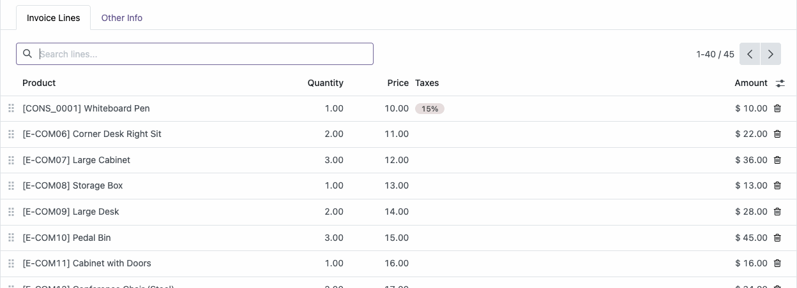
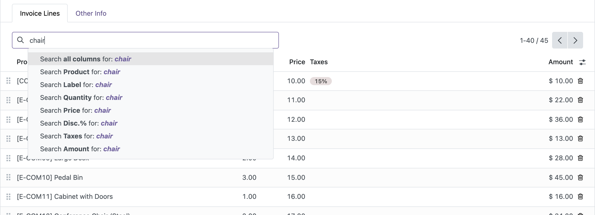
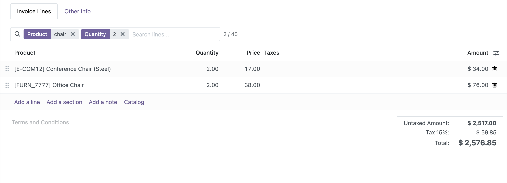
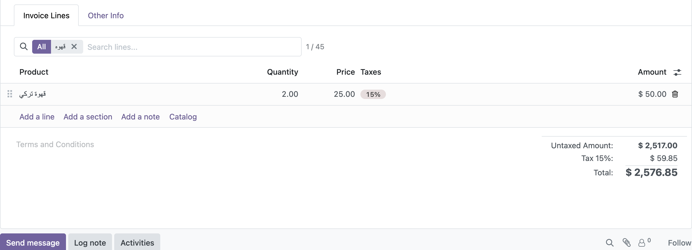

Odoo's search view, above every list inside a form.
Find a line in a 300-line sale order, invoice, purchase order or transfer in seconds: by product, label, quantity or any column.

The search covers all the lines of the record, also those beyond the first page of a long list.
Pick where to search exactly like Odoo's search view: all columns, or Product, Label, Quantity, Taxes...
Each choice becomes a facet. Values in one column match either one, different columns must all match. See 4 / 45 at a glance.
Install and it appears on every one2many and many2many list, in every app. No view to edit, no widget to add.
أحمد = احمد, قهوة = قهوه, مستشفى = مستشفي, tashkeel ignored, ٠١٢ = 012. Users find lines however they type.
Lines you add or edit stay visible during a search, and saving the record is not affected.
Type in the bar above the lines and choose a column from the suggestions, or press Enter to search all columns.

Product contains chair and Quantity is 2: the list shows only the matching lines and how many there are. Remove a facet with its × or with Backspace.

Typing قهوه finds قهوة تركي: different spellings of alef, taa marbuta and yaa, tashkeel and Arabic digits are matched.

Numbers are matched as stored or as displayed (2 and 2.00), and many2one, selection and date columns are searched by what the list shows. To hide the bar on one field, add options="{'no_search': True}" to it.
web).Questions or problems: contact me through the Odoo Apps store and I will answer within two working days.
one2many search, many2many search, x2many search, search order lines, search invoice lines, filter one2many lines, search in form view lines, line items search, o2m filter, m2m filter